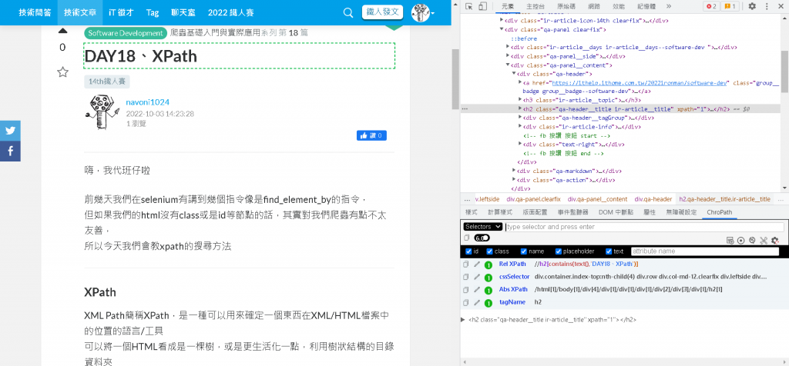

我們在selenium時有講到幾個指令像是find_element_by的指令，但如果我們的html沒有class或是id等節點的話，其實對我們爬蟲有點不太友善，所以今天我們會教xpath的搜尋方法
XPath
XML Path簡稱XPath，是一種可以用來確定一個東西在XML/HTML檔案中的位置的語言/工具可以將一個HTML看成是一棵樹，或是更生活化一點，利用樹狀結構的目錄資料夾像是檔案開頭的<html>包含了整個文件，而這個節點就是整個html的根節點或者是如<head>或是<body>在html下一層，而這兩個節點就是html的子節點，相反地，<html>也是<head>或是<body>的父節點此外，<html>與<head>相互是兄弟節點樹中有許多的節點代表不同元素，而我們就可以使用XPath去查詢這些節點
在XPath中，我們有兩種方式去表現一個節點的位置
- 絕對路徑
絕對路徑以 / 來代表，需要從html的根節點開始寫完整的路徑到目標的節點如:/html[1]/body[1]/div[3]/div[1]/div[1]/div[1]/div[2]/div[3]/div[1]/h2[1]，是我們在Day13網頁中標題的絕對路徑 - 相對路徑
相對路徑以 // 來代表如://h2[contains(text(),‘Day13、Selenium指令使用’)]來代表上面相同上面絕對路徑的相對路徑
find_element_by_xpath()
利用上面絕對路徑或是相對路徑的方法，直接塞進function就好了，如:
1 | node = chrome.find_element_by_path('/html[1]/body[1]/div[3]/div[1]/div[1]/div[1]/div[2]/div[3]/div[1]/h2[1]') |
常常在html中會看到在同個檔案不同個子樹下有相同的節點命名，當使用xpath的相對路徑時可能會有問題這個時候可以透過index索引去找是哪一個節點，如:
1 | node = chrome.find_element_by_path('//p[0]') |
或是利用attribute屬性去標註說我們現在要的是哪一個，如:
1 | <p class='title'>I'm title</p> |
1 | node = chrome.find_element_by_path("//p[@class='title']") |
還有一些神奇的指令像是contains()，可以找出包含字串的節點，如:
1 | node = chrome.find_element_by_path("//p[contains(text(), 'title')]") |
上面講了xpath的語法，但是其實你知道只需要有html樹狀的概念就好了嗎?
俗話說的好，不要重複造輪子，今天就介紹一個好用的工具可以自動產生xpath
ChroPath
ChroPath是一個Chrome的插件，可以在chrome的應用程式商店找到他它是一個協助我們在chrome中定位想要的元素的插件假如你想針對一個網頁的按鈕找出它的xpath去進行selenium控制的話，可以右鍵找到「檢查」的地方後點下去，會進入F12開發者模式，同時F12的html畫面也會同步到一樣的程式片段在此時，我們在右邊開發者模式視窗的地方中間有一排選擇子視窗的地方去找一個叫做ChroPath的地方點開來點開之後，插件就會告訴你路徑的絕對位置或相對位置囉!

XPath就是這麼簡單!